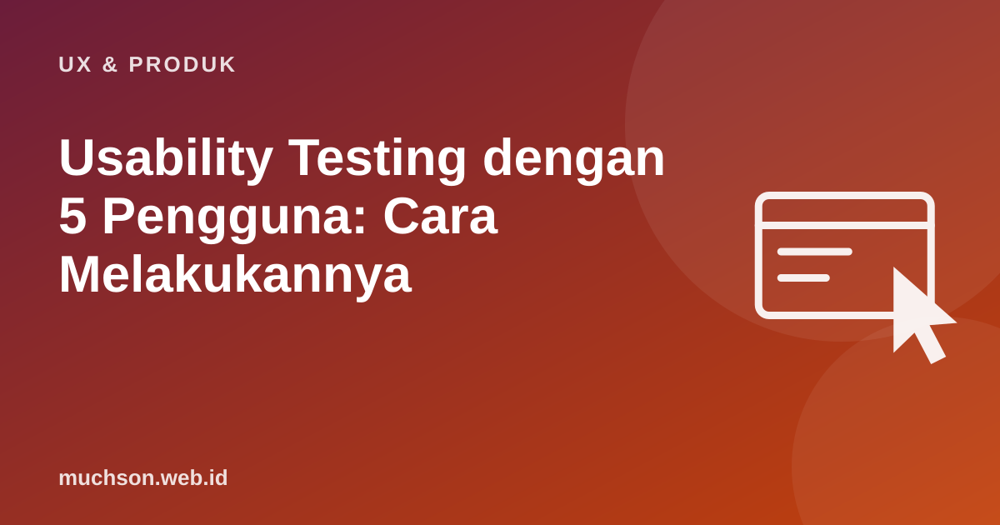

Beranda › Artikel › UX & Produk
UX & ProdukUsability Testing dengan 5 Pengguna: Cara Melakukannya
Tim produk sering berdebat berjam-jam tentang tombol mana yang lebih jelas. Satu sesi uji dengan pengguna sungguhan biasanya menyelesaikan perdebatan itu dalam 20 menit. Usability testing tidak harus mahal atau formal; yang penting dilakukan, dan dilakukan berulang.

Mengapa lima pengguna?
Jakob Nielsen dan Tom Landauer (1993) memodelkan bahwa setiap peserta uji menemukan sebagian masalah usability, dan peserta berikutnya semakin banyak menemukan masalah yang sama. Dengan perkiraan satu pengguna menemukan sekitar 31% masalah, lima pengguna menemukan sekitar 85%. Nielsen kemudian menyarankan: lebih baik tiga putaran uji dengan lima orang daripada satu putaran dengan lima belas orang.
Angka "5 pengguna" berlaku untuk uji kualitatif yang mencari masalah. Untuk mengukur angka (misalnya waktu penyelesaian atau tingkat keberhasilan) dengan yakin, dibutuhkan peserta jauh lebih banyak.
Langkah melakukan uji
Menulis tugas yang baik
| Kurang baik | Lebih baik |
|---|---|
| "Klik menu Pengiriman lalu pilih alamat." | "Anda pindah rumah minggu lalu. Pastikan pesanan berikutnya dikirim ke alamat baru." |
| "Coba fitur filter." | "Cari frame kacamata titanium di bawah Rp500.000 yang cocok untuk wajah bulat." |
| "Apakah halaman ini mudah dipakai?" | "Daftarkan anak Anda untuk kelas coding percobaan hari Sabtu." |
Tugas yang baik menggambarkan tujuan pengguna, bukan langkah di antarmuka, dan tidak memakai kata yang sama dengan label tombol.
Metode think-aloud
Minta peserta menyuarakan apa yang mereka pikirkan sambil mengerjakan tugas. Tugas Anda: diam, mengamati, dan mencatat.
Pembuka sesi:
"Terima kasih sudah datang. Yang kami uji adalah aplikasinya, bukan Anda.
Tidak ada jawaban salah. Sambil mencoba, tolong ucapkan apa yang Anda pikirkan,
misalnya apa yang Anda cari atau apa yang membingungkan.
Saya mungkin tidak menjawab pertanyaan selama tugas, karena kami ingin melihat
bagaimana aplikasi ini dipakai tanpa bantuan."
Pertanyaan netral bila peserta diam:
- "Apa yang sedang Anda pikirkan?"
- "Apa yang Anda harapkan terjadi?"
- "Apa yang Anda cari di layar ini?"Merangkum temuan
| Temuan | Berapa peserta | Tingkat | Saran |
|---|---|---|---|
| Tidak menemukan tombol ubah alamat | 4 dari 5 | Kritis | Pindahkan ke halaman checkout |
| Bingung istilah "PD" | 3 dari 5 | Sedang | Tambahkan penjelasan singkat dan tautan cara mengukur |
| Foto produk terlalu kecil di ponsel | 2 dari 5 | Rendah | Izinkan perbesar dengan cubit |
Tanya jawab
Apakah bisa dilakukan jarak jauh?
Perlukah memberi imbalan peserta?
Kapan sebaiknya uji dilakukan?
Sumber dan bacaan lanjut
- Nielsen Norman Group: Why You Only Need to Test with 5 Users
- Nielsen dan Landauer (1993): A mathematical model of the finding of usability problems, INTERCHI
- Nielsen Norman Group: Thinking Aloud, the #1 Usability Tool